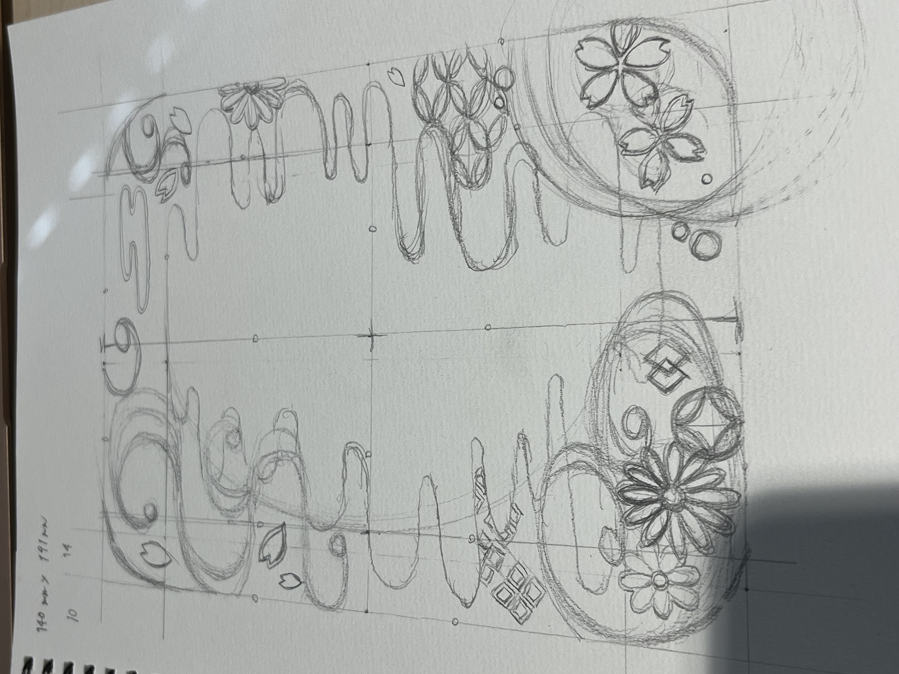
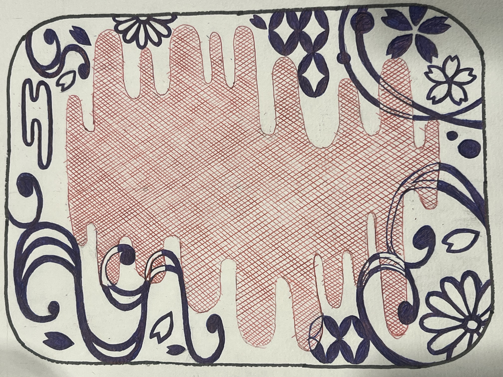
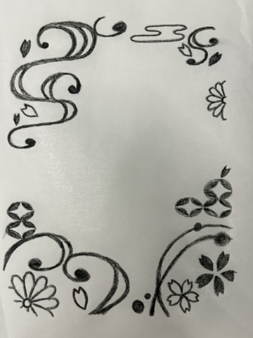
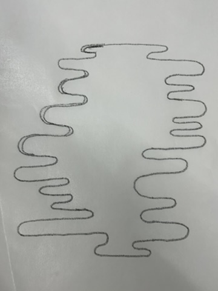
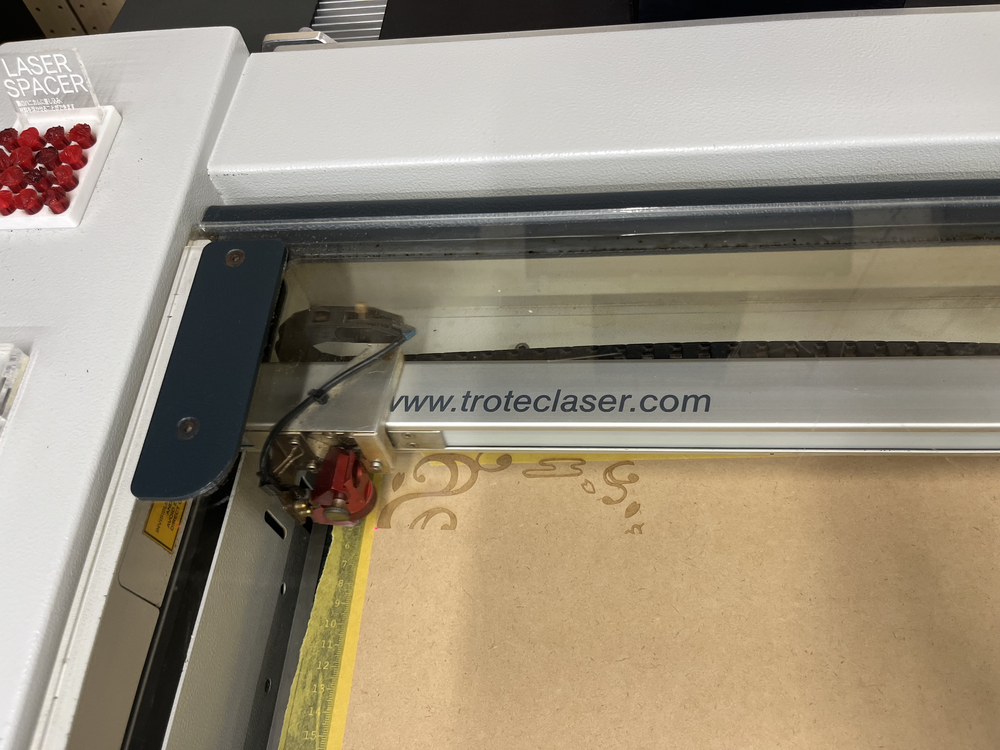
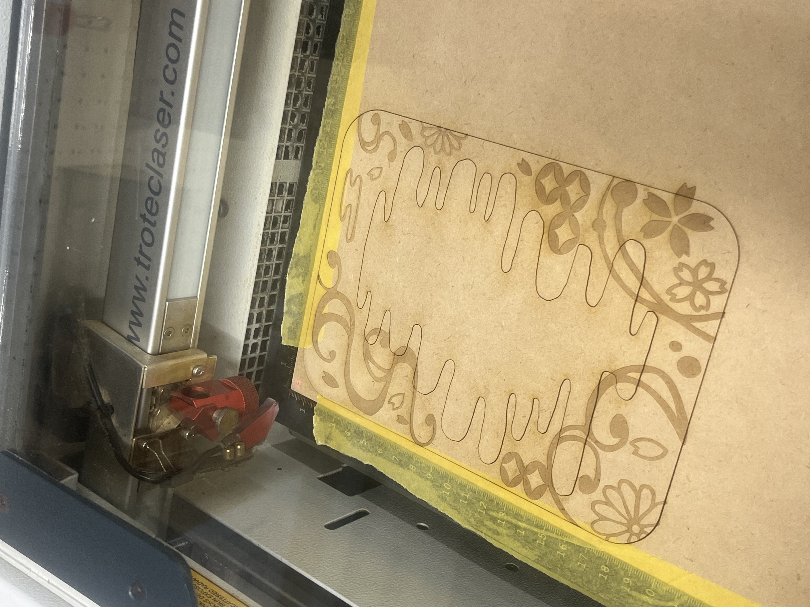
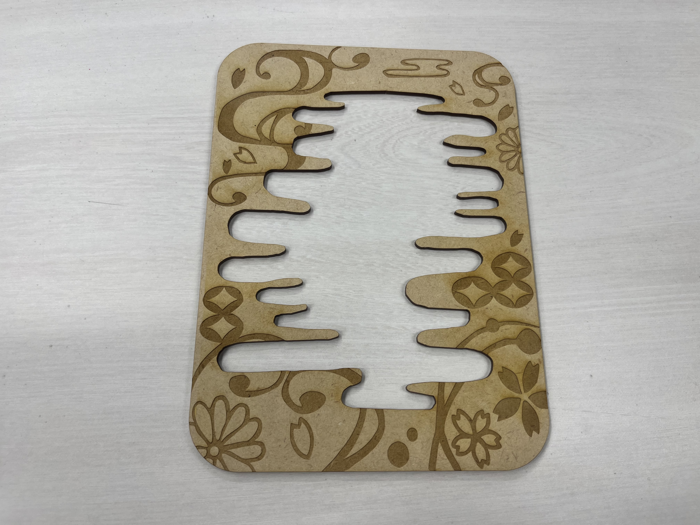
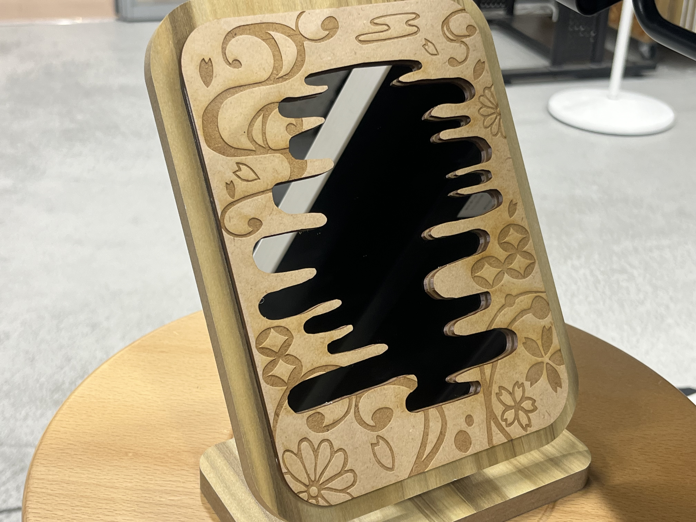
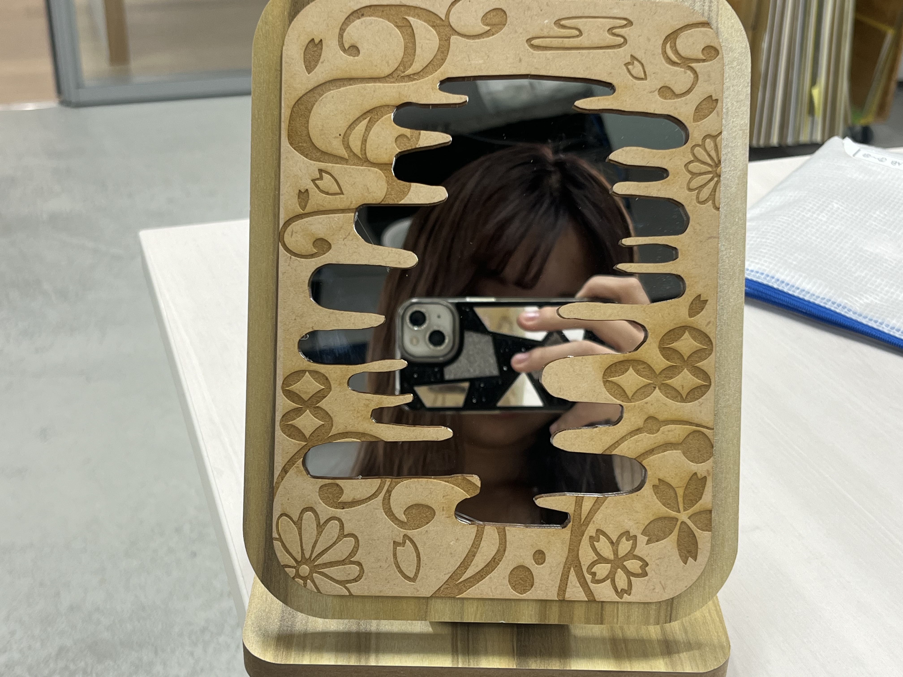
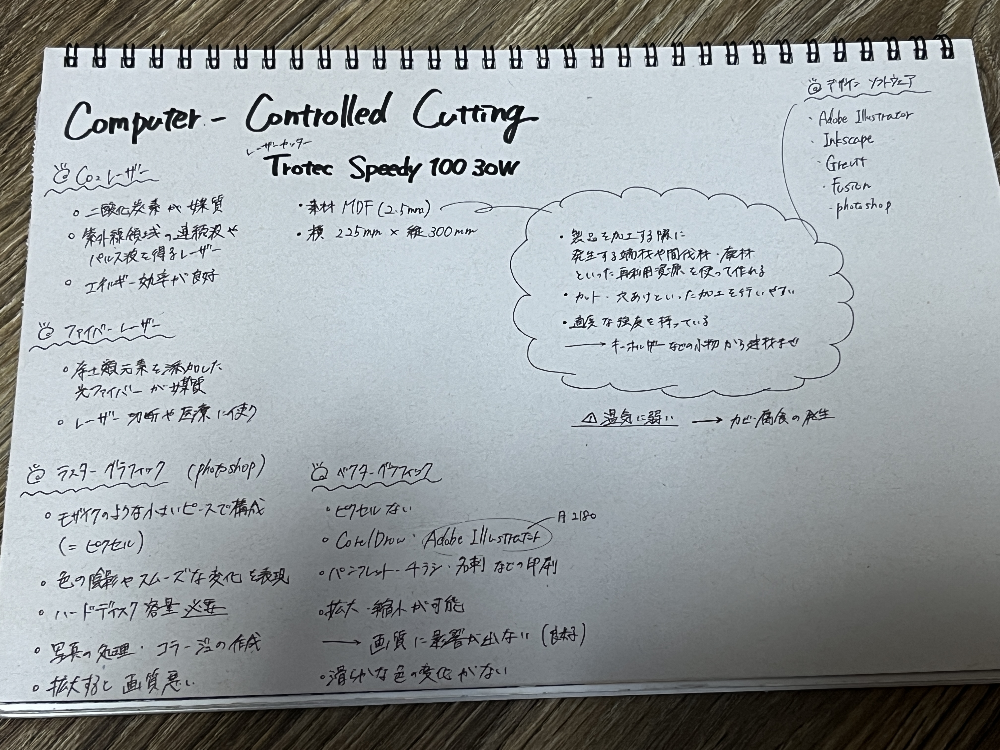

🎀ストリートボード🎀

実際に参考にした画像はこちら✨
🎀下書きの様子🎀
 調べてみたら素材のMDFが木だったので和柄が合うなって思い、和テイストでデザインしてみました
桜が好きだから桜も散りばめてみました🌸🩷
レーザーは彫刻とカットができるとのことだったのでどっちも混ぜた作品にしようと思いました！
🎀デザイン製作中の様子🎀
 イラストレーターに挑戦したいと思って購入したんですが、下書きの赤ペン・青ペンで色つけした写真だとトレースがうまくいかなくて半ばイラレ諦めてました笑
なのでFUSIONで形を一からやってみたり、スマホのIbisPaintで線画描いてみたり、たくさん試行錯誤して時間がかかってしまったりしました...T T💦
ファブラボの方に聞いてみたところ普通紙やトレーシングペーパーで写して再挑戦してみてとのことだったので家にあったクッキングシートで代用して写してトレースして作りました！
トレースにも種類があって、今回は白黒で設定して作りました。上手くトレースができてないところは白い矢印で選択して削除キーで消したら大丈夫でした！
彫刻をする部分とカットする部分に分けて修正して、設定した後にグループ化にして組み合わせてつくりました
彫刻するところは黒、カットする部分は赤にして、0.001の細さに設定しました
🎀レーザーカッターでの製作途中の様子🎀
  彫刻＆カット始まり▶︎彫刻＆カット終了▶︎カット部分を外した
レーザーカットは彫刻して終わったら、カットが始まるっていう感じでした！
🎀完成した作品🎀
 「和風柄ミラー」
DAISO系列のTHREEPPYでStanding Mirror(¥500)を買ってきて貼り付けてみました！
個人的には理想通りの作品ができて超満足してます💖kawaii~~ ＞ ＜♡
自分が欲しかった鏡と自分好みのデザインで、自分の心が動かされました💘 （MDFが木の素材だから土台のミラーも木で合わせたところもポイント！）
全体的に振り返って、今回の課題はとっても難しかったですがその分達成感を感じられたのでよかったです😌✨
🎀設計ファイル🎀
🔗Adobe lllustrator 2025🎀調べたこと🎀
画像付きで解説！Illustratorで画像をトレースする方法！レーザー曲げ加工による曲面木材
Illustratorで画像をトレースする
和柄のイラスト素材
家具などに使われる「MDF」とは？ 環境に優しい素材の特徴をご紹介
ベクターグラフィックとラスターグラフィックの違いは何ですか?
ファイバーレーザー
炭酸ガスレーザー
この他にも、先輩方の作品も全てに目を通し、作品を考える際に参考にさせてもらいました😖
また、「MDF 立体 レーザー」や「和柄 桜」と検索かけたり、「寄木細工」の画像も参考にしました😌✨
🎀追記🎀
これは、今回の課題について事前に調べたことをまとめたものです！